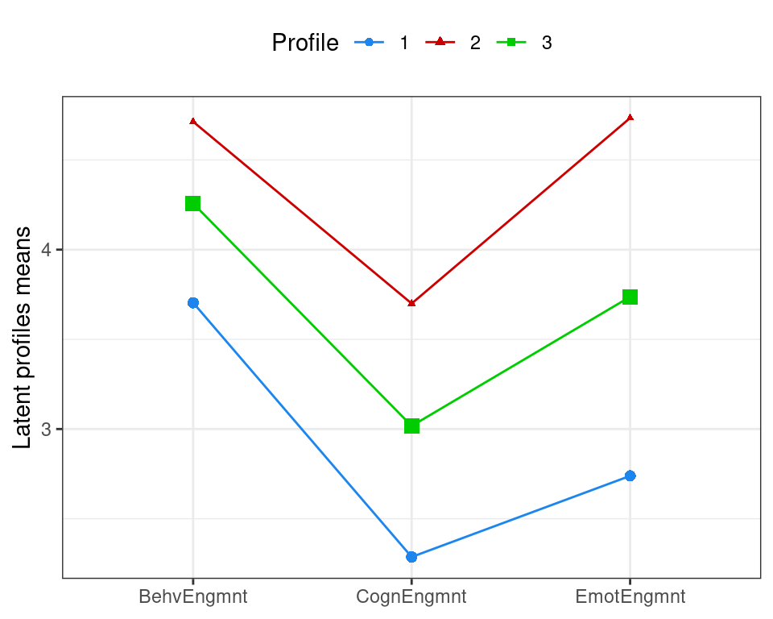
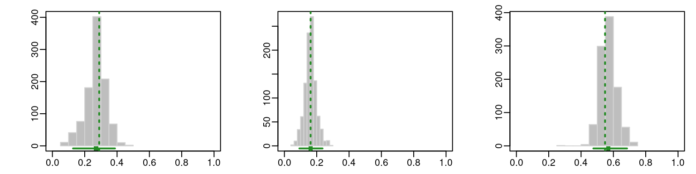
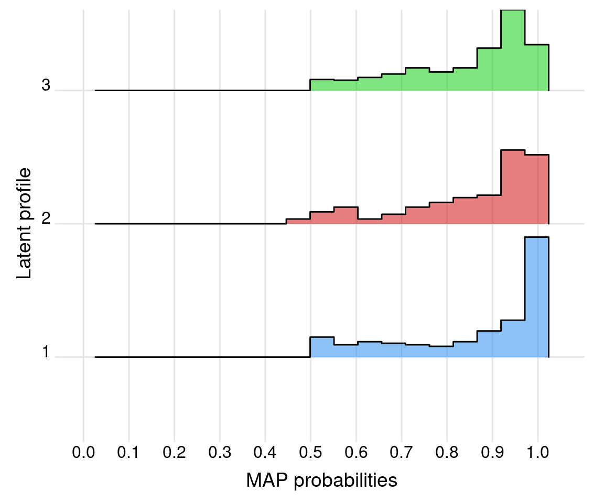

library(ggplot2)
library(ggridges)
library(mclust)
library(rio)
library(tidyverse)9 An Introduction and R Tutorial to Model-based Clustering in Education via Latent Profile Analysis
Abstract
Heterogeneity has been a hot topic in recent educational literature. Several calls have been voiced to adopt methods that capture different patterns or subgroups within students’ behavior or functioning. Assuming that there is “an average” pattern that represents the entirety of student populations requires the measured construct to have the same causal mechanism, same development pattern, and affect students in exactly the same way. Using a person-centered method (finite Gaussian mixture model or latent profile analysis), the present tutorial shows how to uncover the heterogeneity within engagement data by identifying three latent or unobserved clusters. This chapter offers an introduction to the model-based clustering that includes the principles of the methods, a guide to choice of number of clusters, evaluation of clustering results and a detailed guide with code and a real-life dataset. The discussion elaborates on the interpretation of the results, the advantages of model-based clustering as well as how it compares with other methods.
1 Introduction
Education research is commonly performed with variable-centered methods (e.g., correlation, regression, comparison of means e.g., t-test) using a sample from the population to devise or compare central tendency measures or an “average” (i.e., mean or median). The average is assumed to represent the population under study and therefore could be generalised to the population at large [1, 2]. Put another way, the statistical findings of variable-centered methods are thought to apply to all learners in the same way. In doing so, variable-centered methods ignore the individual differences that are universal across all domains of human function [3]. Learners are not an exception; students vary in their behavior, attitude, and dispositions, and they rarely —if at all— conform to a common pattern or an average behavior [2, 4]. An “average” is thus a poor simplification of learners’ heterogeneity; consequently, methods to capture individual differences have started to gain popularity with the increasing attention to patterns and differences among students. Our focus in this chapter is on such person-centered methods [1–3, 5].
Person-centered methods can be broadly grouped into two categories; i) heuristic, dissimilarity-based clustering algorithms (e.g., agglomerative hierarchical clustering, and partitional clustering algorithms like \(k\)-means) on one hand and ii) model-based clustering (MBC) approaches (e.g., finite Gaussian mixture models) on the other. Though we focus here on the MBC paradigm, we note that —contrary to variable-centered methods— person-centered methods are generally concerned with capturing heterogeneity by uncovering the latent (e.g., unobserved or hidden) patterns within data into subgroups of “clusters” or “profiles”, which are assumed to be homogeneous [1, 2]. Modelling the unobserved patterns within the data could reveal the qualitative differences between learners. For instance, where students may have different patterns of approaching their learning, capturing such patterns would make sense as each different approach may benefit from a certain course design, set of instructional methods, or scaffolding approach [2]. Similarly, dispositions such as engagement, motivation, and achievement are multidimensional and vary across students; capturing such differences requires a method that could handle such nonlinear multidimensional dispositions and identify the different patterns.
This chapter deals with one of the person-centered methods; namely, latent profile analysis (from the perspective of model-based clustering via finite Gaussian mixture models). To clarify, we note that the terms finite mixture models and latent profile analysis can be used interchangeably, with the former being more common in the statistical literature and the latter being more common in the education literature and social sciences literature more broadly. The equivalence of both terminologies is further elaborated in sec-LPA. In any case, this framework represents a probabilistic approach to statistical unsupervised learning that aims at discovering clusters of observations in a data set [6]. In other words, the MBC paradigm is referred to as model-based by virtue of being based on a generative probabilistic model, unlike heuristic clustering algorithms based on dissimilarity criteria.
We also offer a walkthrough tutorial for the analysis of a data set on school engagement, academic achievement, and self-regulated learning using the popular mclust package [7] for R [8] which implements the approach. Whereas mixture models and mclust have received growing attention within social science, they have not garnered widespread utilisation in the field of educational research and their adoption in learning analytics research has been relatively slow.
2 Literature review
Examples of mixture models being applied in educational research settings are relatively few compared to other methods of clustering. Some notable examples exist which address patterns in students’ online learning [9] or patterns in students’ disposition [10] or collaborative roles [11]. Most studies in education research that applied mixture models used latent profile analysis (LPA) to identify students’ profiles from self-reported data. For example, [10] performed LPA on a data set of 318 students’ survey responses about emotional self-efficacy, motivation, self-regulation, and academic performance, and identified four profiles: “low”, “average”, “above average with a low ability to handle the emotions of others”, and “high emotional self-efficacy”. In the work by [12], the authors analyzed 615 vocational education students’ achievement emotions in online learning environments, and found three profiles: “blends of negative emotions”, “nonemotional”, and “pure positive emotion”. [13] employed LPA on self-report data on classroom engagement from 413 first-year university students in Vietnam and found three profiles: “highly engaged”, “moderately engaged”, and “minimally engaged”. [14] collected survey responses from 2,339 engineering undergraduates about 28 noncognitive and affective factors using a survey instrument and using Gaussian mixture models found four very distinct profiles of students.
The analysis of online trace log data —which is at the core of learning analytics data— with mixture models is even less common. In the study by [15], the authors applied LPA to variables related to debugging derived from students’ programming problems submission traces. They found a profile with higher debugging accuracy and coding speed, another profile with lower debugging performance in runtime and logic errors, and a third profile with lower performance in syntactic errors who tended to make big changes in every submission. Studies covering online collaborative learning are even more scarce. A rare example is the study by [11], in which the authors used latent profile analysis to identify students’ roles in collaboration based on their centrality measures. The mixture models identified three collaborative roles that represented a distinct pattern of collaboration: leaders, who contribute the most to the discussion, whose arguments are more likely to spread; mediators, who bridge others and moderate the discussions; as well as isolates, who are socially idle and do not contribute to the discussion.
A considerable number of studies that applied mixture models further investigate the association between profile membership and academic achievement. For example, in the aforementioned study by [10], students with high emotional self-efficacy had higher academic performance than the other profiles. In the study by [15], the authors found that higher debugging accuracy was related to higher scores in all exams, whereas there were no differences between the two other identified profiles. By the same token, researchers have attempted to find reasons why a certain profile emerged, or what are the variables that are more associated with one profile more than the other. For example, [13] found that peer support, provision of choice, and task relevance are the factors more likely to predict classroom engagement profile membership. [10] found that self-regulation and motivation played significant roles in determining profile membership.
Clearly, there are plenty of opportunities for further exploration and investigation in this area that could augment our knowledge of learning, learners’ behavior, and the variabilities of learning processes [2]. This is especially true given the numerous advantages of the MBC paradigm over more traditional, heuristic clustering algorithms, which we imminently describe. Subsequently, in the rest of this chapter we elaborate on the theoretical underpinnings of the family of Gaussian parsimonious clustering models implemented in the mclust R package and additionally explore some advanced features of the package, which we employ in an analysis of a real educational research application thereafter. Finally, we conclude with a brief discussion.
##Model-based clustering As stated above, clustering methods, in a general sense, are used to uncover group structure in heterogeneous populations and identify patterns in a data set which may represent distinct subpopulations. While there is no universally applicable definition of what constitutes a cluster [16], it is commonly assumed that clusters should be well separated from each other and cohesive in an ideal analysis [17]. Conversely, objects within a cluster should be more similar to each other in some sense, in such a way that an observation has a defined relationship with observations in the same cluster, but not with observations from other clusters.
Traditional clustering approaches, like the aforementioned \(k\)-means algorithm, and agglomerative hierarchical clustering, use dissimilarity-based heuristics to ultimately produce a “hard” partition of cases into groups, such that each observation is associated with exactly one cluster only. As such approaches are not underpinned by a statistical model, assessment of the optimal number of clusters is often a fraught task, lacking the guidance of principled statistical model selection criteria. However, we note that \(k\)-means can be recasted as a clustering model assuming a Gaussian mixture with equal proportions and diagonal equal covariance matrix across groups. Moreover, some (but not all) agglomerative hierarchical clustering models can be rooted in a statistical model also, as discussed in [18].
Conversely, the MBC paradigm typically assumes that data arise from a (usually finite) mixture of probability distributions, whereby each observation is assumed to be generated from a specific cluster, characterised by an associated distribution in the mixture [19]. Ideally, mixtures of distributions are supposed to provide a good model for the heterogeneity in a data set; that is, once an observation has been assigned to a cluster, it is assumed to be well-represented by the associated distribution. As such, MBC methods are based on a formal likelihood and seek to estimate parameters (e.g., means, variances, and covariances, which may or may not differ across groups) which best characterise the different distributions. Rather than yielding only a “hard” partition, each observation is assigned a probability of being associated with each mixture component —such that observations can have non-negative association with more than one cluster— from which a hard partition can be constructed. These probabilities are treated as weights when estimating the component parameters, which brings the advantages of minimising the effect of observations lying near the boundary of two natural clusters (e.g., a student with an ambiguous learning profile) and being able to quantity the uncertainty in the cluster assignment of a particular observation to provide a sense of cases for which further investigation may be warranted. Compared to other approaches, the other main advantages of this statistical modelling framework are its ability to use statistical model selection criteria and inferential procedures for evaluating and assessing the results obtained.
Inference for finite mixture models is routinely achieved by means of the expectation-maximisation (EM) algorithm [20], under which each observation’s component membership is treated as a “missing” latent variable which must be estimated. This formulation assumes that the data are conditionally independent and identically distributed, where the conditioning is with respect to a latent variable representation of the data in which the latent variable indicates cluster membership. Given the relative familiarity of latent class and latent profile terminology in the social sciences, we now explicitly cast MBC methods in the framework of latent variable modelling.
2.1 Latent variable models
Latent variable models are statistical models that aim to explain the relationships between observed variables by introducing one or more unobserved or latent variables. The idea behind latent variable models is that some of the underlying constructs or concepts we are interested in cannot be measured directly, but only through their effects on observable variables. Latent variable modelling has a relatively long history, dating back from the measure of general intelligence by factor analysis [21], to the structural equation modelling approach [22], from topic modelling, such as the latent Dirichlet allocation algorithm [23], to hidden Markov models for time series [24] and longitudinal data [25]. Latent variable models are widely used in various fields, including psychology, sociology, economics, and biology, to name a few. They are particularly useful when dealing with complex phenomena that cannot be easily measured or when trying to understand the underlying mechanisms that drive the observed data.
When discussing latent variable modelling, it is useful to consider the taxonomy presented by [26]. This can be particularly helpful, as the same models are sometimes referred to by different names in different scientific disciplines. [26, Table 1.3] considered a cross-classification of latent variable methods based on the type of variable (manifest or latent) and its nature (metrical or categorical). If both the manifest and latent variables are metrical, the model is called a factor analysis model. If the manifest variables are categorical and the latent variables are metrical, the model is called a latent trait model or item response theory model. If the manifest variables are metrical and the latent variables are categorical, the model is called a latent profile analysis model. If both the manifest and latent variables are categorical, the model is called a latent class model.
In this scheme, finite Gaussian mixture models described in this chapter assume that the observed variables are continuous and normally distributed, while the latent variable, which represents the cluster membership of each observation, is categorical. Therefore, Gaussian mixtures belong to the family of latent profile analysis models. This connection is made apparent by the tidyLPA R package [27], which leverages this equivalence to provide an interface to the well-known mclust R package [7] used throughout this chapter, using tidyverse syntax and terminology which is more familiar in the LPA literature.
2.2 Finite Gaussian mixture models
As described above, finite mixture models (FMMs) provide the statistical framework for model-based clustering and allow for the modelling of complex data by combining simpler distributions. Specifically, a FMM assumes that the observed data are generated from a finite mixture of underlying distributions, each of which corresponds to a distinct subgroup or cluster within the data. Gaussian mixture models (GMMs) are a particularly widespread variant of FMMs which specifically assume that each of the underlying distributions is a (multivariate) Gaussian distribution. This means that the data within each cluster are normally distributed, but with potentially different means and covariance matrices. The relevance of GMMs stems from the well-established fact that mixtures of Gaussians can provide an accurate approximation to any continuous density.
In FMMs, the latent variable represents the cluster assignment for each observation in the data. It is a categorical variable assuming one of a finite set of possible values that correspond to different clusters. Alternatively, it can be encoded using a set of indicator variables, which take the value of 1 for the cluster to which the observation belongs, and 0 for all other clusters.
To estimate the parameters of a GMM with the associated latent variable for cluster membership, a likelihood-based approach is typically used. The likelihood function expresses the probability of observing the data, given the parameter values and the latent variable. The maximum likelihood estimation (MLE) method is commonly used to estimate the parameters and the latent variable which maximise the likelihood function. Usually, the number of clusters in a GMM is also unknown, and it is determined through a process known as model selection, which involves comparing models with different numbers of clusters and parameterisations and selecting the one which best fits the data.
In summary, model-based clustering from the perspective of latent variable modelling assumes that the data is generated from a probabilistic model with a specific number of clusters. A likelihood-based approach can be used to estimate the parameters of the model and the latent variable that represents the cluster assignment for each observation in the data, and guide the selection of the number of clusters. A GMM is a common framework for model-based clustering which assumes the data in each cluster is generated from a Gaussian distribution.
3 Gaussian parsimonious clustering models
For a continuous feature vector \(\boldsymbol{x}\in \mathbb{R}^{d}\), the general form of the density function of a Gaussian mixture model (GMM) with \(K\) components can be written as \[ f(\boldsymbol{x}) = \sum_{k=1}^K \pi_k \phi_d(\boldsymbol{x};\boldsymbol{\mu}_k,\boldsymbol{\Sigma}_k), \tag{1}\] where \(\pi_k\) represents the mixing probabilities, i.e., the marginal probability of belonging to the \(k\)-th cluster, such that \(\pi_k > 0\) and \(\sum_{k=1}^K\pi_k=1\), and \(\phi_d(\cdot)\) is the \(d\)-dimensional multivariate Gaussian density with parameters \((\boldsymbol{\mu}_k,\boldsymbol{\Sigma}_k)\) for \(k=1,\ldots,K\). Clusters described by such a GMM are ellipsoidal, centered at the means \(\boldsymbol{\mu}_k\), and with other geometric characteristics (namely volume, shape, and orientation) determined by the covariance matrices \(\boldsymbol{\Sigma}_1, \ldots, \boldsymbol{\Sigma}_K\). Parsimonious parameterisations of covariance matrices can be controlled by imposing some constraints on the covariance matrices through the following eigen-decomposition [28, 29]: \[ \boldsymbol{\Sigma}_k = \lambda_k \boldsymbol{U}_k \boldsymbol{\Delta}_k \boldsymbol{U}{}^{\!\top}_k, \tag{2}\] where \(\lambda_k = \lvert\boldsymbol{\Sigma}_k\rvert^{1/d}\) is a scalar which controls the volume, \(\boldsymbol{\Delta}_k\) is a diagonal matrix whose entries are the normalised eigenvalues of \(\boldsymbol{\Sigma}_k\) in decreasing order, such that \(\lvert\boldsymbol{\Delta}_k\rvert = 1\), which controls the shape of the density contours, and \(\boldsymbol{U}_k\) is an orthogonal matrix whose columns are the eigenvectors of \(\boldsymbol{\Sigma}_k\), which controls the orientation of the corresponding ellipsoid. The size of a cluster is distinct from its volume and is proportional to \(\pi_k\) [29].
GMMs with unconstrained covariance matrices are quite flexible, but require the estimation of several parameters. To obtain a balance between model complexity and accuracy of parameter estimates, a parsimonious model parameterisation can be adopted. Constraining the geometric characteristics of cluster covariances to be equal across clusters can greatly reduce the number of estimable parameters, and is the means by which GMMs obtain intermediate covariance matrices between homoscedasticity and heteroscedasticity. A list of the 14 resulting parameterisations available in the mclust package [7] for R [8] is included in Table 2.1 of [30]. Of particular note is the nomenclature adopted by mclust whereby each model has a three-letter name with each letter pertaining to the volume, shape, and orientation, respectively, denoting whether the given component is equal (E) or free to vary (V) across clusters. Some model names also use the letter I in the third position to indicate that the covariance matrices are diagonal and two particularly parsimonious models have the letter I in the second position to indicate that the covariance matrices are isotropic. Thus, as examples, the fully unconstrained VVV model is one for which the volume, shape, and orientation are all free to vary across clusters, the EVE model constrains the clusters to have equal volume and orientation but varying shape, and the VII model assumes isotropic covariance matrices with cluster-specific volumes. The flexibility to model clusters with different geometric characteristics by modelling correlations according to various parameterisations represents another advantage over heuristic clustering algorithms. Taking the \(k\)-means algorithm as an example, a larger number of circular, Euclidean distance-based clusters may be required to fit the data well, rather than a more parsimonious and easily interpretable mixture model with fewer non-spherical components.
Given a random sample of observations \(\{ \boldsymbol{x}_1, \boldsymbol{x}_2, \ldots, \boldsymbol{x}_n \}\) in \(d\) dimensions, the log-likelihood of a GMM with \(K\) components is given by \[ \ell(\boldsymbol{\theta}) = \sum_{i=1}^n \log\left\{ \sum_{k=1}^K \pi_k \phi_d(\boldsymbol{x}_i ; \boldsymbol{\mu}_k, \boldsymbol{\Sigma}_k) \right\}, \tag{3}\] where \(\boldsymbol{\theta}= (\pi_1, \ldots, \pi_{K-1}, \boldsymbol{\mu}_1, \ldots, \boldsymbol{\mu}_K, \boldsymbol{\Sigma}_1, \ldots, \boldsymbol{\Sigma}_K)\) denotes the collection of parameters to be estimated.
Maximizing the log-likelihood function in Equation eq-loglik directly is often complicated, so maximum likelihood estimation (MLE) of \(\boldsymbol{\theta}\) is usually performed using the EM algorithm [20] by including the component membership as a latent variable. The EM algorithm consists of two steps: the E-step (Expectation step) and the M-step (Maximisation step). In the E-step, the algorithm calculates the expected membership probabilities of each data point to each of the mixture components based on the current estimates of the model parameters. Thus, though the latent variable indicating cluster membership is assumed to be categorical and represented by indicator variables taking the values \(0\) or \(1\), the model estimates assignment probabilities in the range \([0,1]\) at this step. In the M-step, the algorithm updates the model parameters by maximizing the likelihood of the observed data given the estimated membership probabilities. These two steps are repeated until convergence or a maximum number of iterations is reached. Details on the use of EM algorithm in finite mixture modelling is provided by [19], while a thorough treatment and further extensions can be found in [31]. For the GMM case, see Sec. 2.2 of [30].
Following the fitting of a GMM and the determination of the MLEs of parameters, the maximum a posteriori (MAP) procedure can be used to assign the observations into the most likely cluster and recover a “hard” partition. For an observation \(\boldsymbol{x}_i\) the posterior conditional probability of coming from the mixture component \(k\) is given by \[ \widehat{p}_{ik} = \frac{\widehat{\pi}_k \phi_d(\boldsymbol{x}_i; \widehat{\boldsymbol{\mu}}_k, \widehat{\boldsymbol{\Sigma}}_k)}{\displaystyle\sum_{g=1}^K \widehat{\pi}_g \phi_d(\boldsymbol{x}; \widehat{\boldsymbol{\mu}}_g, \widehat{\boldsymbol{\Sigma}}_g)}. \tag{4}\] Then, an observation is assigned to the cluster with the largest posterior conditional probability, i.e., \(\boldsymbol{x}_i \in \mathcal{C}_{k^\star}\) with \(k^\star = \mathop{\mathrm{arg\,max}}_k \widehat{p}_{ik}\).
3.1 Model selection
Given that a wide variety of GMMs in Equation eq-gmm can be estimated by varying the number of mixture components and the covariance decompositions in Equation eq-eigendecomp, selecting the appropriate model represents a crucial decision. A popular option consists in choosing the “best” model using the Bayesian information criterion [BIC, 32], which, for a given model \(\mathcal{M}\), is defined as \[ \text{BIC}_{\mathcal{M}} = 2\ell_{\mathcal{M}}(\widehat{\boldsymbol{\theta}}) - \nu_{\mathcal{M}} \log(n), \] where \(\ell_{\mathcal{M}}(\widehat{\boldsymbol{\theta}})\) stands for the maximised log-likelihood of the data sample of size \(n\) under model \(\mathcal{M}\), and \(\nu_{\mathcal{M}}\) for the number of independent parameters to be estimated. Another option available in clustering is the Integrated Complete Likelihood [ICL, 33] criterion given by \[ \text{ICL}_{\mathcal{M}} = \text{BIC}_{\mathcal{M}} + 2 \sum_{i=1}^n\sum_{k=1}^K c_{ik} \log(\widehat{p}_{ik}), \] where \(\widehat{p}_{ik}\) is the conditional probability that \(\boldsymbol{x}_i\) arises from the \(k\)-th mixture component from Equation eq-postcondprob, and \(c_{ik} = 1\) if the \(i\)-th observation is assigned to cluster \(\mathcal{C}_k\) and 0 otherwise.
Both criteria evaluate the fit of a GMM to a given set of data by considering both the likelihood of the data given the model and the complexity of the model itself, represented by the number of parameters to be estimated. Compared to the BIC, the ICL introduces a further entropy-based penalisation for the overlap of the clusters. For this reason, the ICL tends to select models with well-separated clusters.
Whereas there is no consensus of a standard criteria for choosing the best model, there are guidelines that the researcher could rely on. To decide on the optimal model, examining the fit indices (such as the BIC and ICL), model interpretability, and conformance to theory can be of great help. The literature recommends estimating a 1-cluster solution for each model that serves as a comparative baseline and then increasing the number of clusters one by one, evaluating if adding another cluster yields a better solution in both statistical and conceptual terms [34]. Among all fit indices, lower BIC values seems to be the preferred method for selecting the best model. However, examining other indices (e.g., AIC, ICL) is also useful. Oftentimes, fit indices do not converge to a certain model. In such cases, the interrelation between the selected models, such as whether one model is an expanded version of another, should also be taken into consideration, as well as the stability of the different models, including the relative sizes of the emergent profiles (each profile should comprise more than 5-8% of the sample) [34]. Furthermore, the elbow method could be helpful in cases where no clear number of clusters can be easily determined from the fit indices (e.g., the BIC continues to decrease consistently when increasing the number of clusters). This entails plotting the BIC values and finding an elbow shape where a drop in BIC is less noticeable with increasing numbers of clusters or roughly an elbow followed by a relatively flat line. The choice of the best number of clusters can and probably should be guided by theory; that is, in cases where previous research reported a certain number of clusters or profiles, it is recommended to take this guidance into account. For instance, research on engagement has repeatedly reported three levels of engagement. Once we have chosen the most suitable model, it is suggested to compute model diagnostics (e.g., entropy and average posterior probability) to evaluate the selected model. These diagnostics are covered in sec-entropy.
3.2 mclust R package
mclust is an R package [8] for model-based cluster analysis, classification, and density estimation using Gaussian finite mixture models [30, 35]. It is widely used in statistics, machine learning, data science, and pattern recognition. One of the key features of mclust is its flexibility in modelling quantitative data with several covariance structures and different numbers of mixture components. Additionally, the package provides extensive graphical representations, model selection criteria, initialisation strategies for the EM algorithm, bootstrap-based inference, and Bayesian regularisation, among other prominent features. mclust also represents a valuable tool in educational settings because it provides a powerful set of models that allows students and researchers to quickly and easily perform clustering and classification analyses on their data. We focus here on the use of mclust as a tool for unsupervised model-based clustering, though the package does also provide functions for supervised model-based classification.
The main function implementing model-based clustering is called Mclust(), which requires a user to provide at least the data set to analyze. In the one-dimensional case, the data set can be a vector, while in the multivariate case, it can be a matrix or a data frame. In the latter case, the rows correspond to observations, and the columns correspond to variables.
The Mclust() function allows for further arguments, including the optional argument G to specify the number of mixture components or clusters, and modelNames to specify the covariance decomposition. If both G and modelNames are not provided, Mclust() will fit all possible models obtained using a number of mixture components from 1 to 9 and all 14 available covariance decompositions, and it will select the model with the largest BIC. Notably, if the data set is univariate, only 2 rather than 14 models governing the scalar variance parameters are returned; that they are equal or unequal across components. Finally, computing the BIC and ICL criteria can be done by invoking the functions mclustBIC() and mclustICL(), respectively.
3.3 Other practical issues and extensions
Prior to commencing the cluster analysis of a data set on school engagement, academic achievement, and self-regulated learning measures, we first provide some theoretical background on some extensions of practical interest which will be explored in the analysis.
3.3.1 Bayesian regularisation
Including a prior distribution over the mixture parameters is an effective way to avoid singularities and degeneracies in maximum likelihood estimation. Furthermore, this can help to prevent overfitting and improve model performance. In situations where the variables of interest are discrete or take on only a few integer values, including a prior distribution can help to regularise the model.
[36] proposed using weekly informative conjugate priors to regularise the estimation process. The EM algorithm can still be used for model fitting, but maximum likelihood estimates (MLEs) are replaced by maximum a posteriori (MAP) estimates. A slightly modified version of BIC can be used for model selection, with the maximised log-likelihood replaced by the log-likelihood evaluated at the MAP or posterior mode.
The prior distributions proposed by [36] are:
a uniform prior on the simplex for the mixture weights \((\pi_1, \ldots, \pi_K)\);
a Gaussian prior on the mean vector (conditional on the covariance matrix), i.e., \[\begin{align} \boldsymbol{\mu}\mid \boldsymbol{\Sigma} & \sim \mathcal{N}(\boldsymbol{\mu}_{\scriptscriptstyle \mathcal{P}}, \boldsymbol{\Sigma}/\kappa_{\scriptscriptstyle \mathcal{P}}) \\ & \propto \left|\boldsymbol{\Sigma}\right|^{-1/2} \exp\left\{ -\frac{\kappa_{\scriptscriptstyle \mathcal{P}}}{2} \mathop{\mathrm{tr}}\left(\left(\boldsymbol{\mu}- \boldsymbol{\mu}_{\scriptscriptstyle \mathcal{P}}\right){}^{\!\top} \boldsymbol{\Sigma}^{-1} \left(\boldsymbol{\mu}- \boldsymbol{\mu}_{\scriptscriptstyle \mathcal{P}}\right) \right) \right\}, \label{eqn:multivariatePriorMean} \end{align}\] with \(\boldsymbol{\mu}_{\scriptscriptstyle \mathcal{P}}\) and \(\kappa_{\scriptscriptstyle \mathcal{P}}\) being the hyperparameters controlling, respectively, the mean vector and the amount of shrinkage applied;
an inverse Wishart prior on the covariance matrix, i.e., \[\begin{align} \boldsymbol{\Sigma} & \sim \mathcal{IW}(\nu_{\scriptscriptstyle \mathcal{P}}, \boldsymbol{\Lambda}_{\scriptscriptstyle \mathcal{P}}) \nonumber\\ & \propto \left|\boldsymbol{\Sigma}\right|^{-(\nu_{\scriptscriptstyle \mathcal{P}}+d+1)/2} \exp\left\{ -\frac{1}{2} \mathop{\mathrm{tr}}\left(\boldsymbol{\Sigma}^{-1} \boldsymbol{\Lambda}_{\scriptscriptstyle \mathcal{P}}^{-1} \right) \right\}, \label{eqn:multivariatePriorVar} \end{align}\] with the hyperparameters \(\nu_{\scriptscriptstyle \mathcal{P}}\) and the matrix \(\boldsymbol{\Lambda}_{\scriptscriptstyle \mathcal{P}}\) controlling the degrees of freedom and scale of the prior distribution, respectively.
Adding a prior to GMMs estimated using the mclust R package is easily obtained by adding an optional prior argument when calling some of the fitting functions, such as mclustBIC() and Mclust(). Specifically, setting prior = priorControl(functionName = "defaultPrior") allows to adopt the conjugate priors described above with the following default values for the hyperparameters:
mean vector \(\boldsymbol{\mu}_{\scriptscriptstyle \mathcal{P}}= \bar{\boldsymbol{x}}\), the sample mean of each variable;
shrinkage \(\kappa_{\scriptscriptstyle \mathcal{P}}= 0.1\);
degrees of freedom \(\nu_{\scriptscriptstyle \mathcal{P}}= d+2\);
scale matrix \(\boldsymbol{\Lambda}_{\scriptscriptstyle \mathcal{P}}= \S/(K^{2/d})\), where \(\S\) is the sample covariance matrix.
Rationale for the above default values for the prior hyperparameters, together with the corresponding MAP estimates of the GMM parameters, can be found in [36, Table 2]. These values should suffice for most applications, but experienced users who want to tune the hyperparameters can refer to the documentation available in the help pages for priorControl and defaultPrior(). Further details about specifying different hyperparameter values can be found in [30].
3.3.2 Bootstrap inference
Likelihood-based inference in mixture models is complicated because asymptotic theory applied to mixture models require a very large sample size [19], and standard errors derived from the expected or the observed information matrix tend to be unstable [37]. For these reasons, resampling approaches based on the bootstrap are often employed [38].
The bootstrap [39] is a general, widely applicable, powerful technique for obtaining an approximation to the sampling distribution of a statistic of interest. The bootstrap distribution is approximated by drawing a large number of samples, called bootstrap samples, from the empirical distribution. This can be obtained by resampling with replacement from the observed data (nonparametric bootstrap), or from a parametric distribution with unknown parameters substituted by the corresponding estimates (parametric bootstrap). A Bayesian version of the bootstrap, introduced by [40], allows posterior samples to be obtained by resampling with weights for each observation drawn from a uniform Dirichlet distribution. A strictly related technique is the weighted likelihood bootstrap [41], where a statistical model is repeatedly fitted using weighted maximum likelihood with weights obtained as in Bayesian bootstrap.
Let \(\widehat{\boldsymbol{\theta}}\) be the estimate of a set of GMM parameters \(\boldsymbol{\theta}\) for a given model \(\mathcal{M}\), determined by the adopted covariance parameterisation and number of mixture components. The bootstrap distribution for the parameters of interest is obtained as follows:
draw a bootstrap sample of size \(n\) using one of the resampling techniques described above to form the bootstrap sample \((\boldsymbol{x}^\star_1, \ldots, \boldsymbol{x}^\star_n)\);
fit a the GMM \(\mathcal{M}\) to get the bootstrap estimates \(\widehat{\boldsymbol{\theta}}^\star\);
replicate the previous steps a large number of times, say \(B\).
The bootstrap distribution for the parameters of interest, \(\widehat{\boldsymbol{\theta}}^\star_1, \widehat{\boldsymbol{\theta}}^\star_2, \ldots, \widehat{\boldsymbol{\theta}}^\star_B\), can then be used for computing the bootstrap standard errors (as the square root of the diagonal elements of the bootstrap covariance matrix) or the bootstrap percentile confidence intervals. More details can be found in [30].
From a practical point of view, bootstrap resampling can be conducted in mclust by means of the function MclustBootstrap(). This function takes as arguments the fitted model object returned from e.g., Mclust() or mclustBIC(), the optional argument type, which allows to specify the type of bootstrap samples to draw ("bs" for nonparametric bootstrap, "pb" for parametric bootstrap, and "wlbs" for weighted likelihood bootstrap), and the optional argument nboot, which sets the number of bootstrap samples. At least \(999\) samples should be drawn if confidence intervals are needed.
3.3.3 Entropy and average posterior probabilities
The definition of entropy in information theory [42] refers to the average amount of information provided by a random variable. Following this definition, [43] defines the entropy of a finite mixture model as follows \[ E_{\text{FMM}} = - \sum_{i=1}^n \sum_{k=1}^K \widehat{p}_{ik} \log(\widehat{p}_{ik}), \] where \(\widehat{p}_{ik}\) is the estimated posterior probability of case \(i\) to belong to cluster \(k\) (see Equation eq-postcondprob). If the mixture components are well separated, \(\widehat{p}_{ik} \approx 1\) for the assigned cluster \(\mathcal{C}_k\) and \(0\) otherwise. Consequently, the entropy of the mixture model in this case is \(E_{\text{FMM}} = 0\) (note that \(0\log(0)=0\) by convention). On the contrary, in the case of maximal assignment uncertainty, \(\widehat{p}_{ik} = 1/K\) for all clusters \(\mathcal{C}_k\) (\(k=1,\ldots,K\)). As a result, the entropy of the mixture model is \(E_{\text{FMM}} = n\log(K)\).
In latent class and latent profile analysis, a slightly different definition of entropy is used as a diagnostic statistic to assess how well the fitted model assigns individuals to the identified clusters based on their response patterns. Thus, a normalised version of the entropy is defined as follows \[ E = 1 - \frac{E_{\text{FMM}}}{n \log(K)} = 1 + \dfrac{\sum_{i=1}^n \sum_{k=1}^K \widehat{p}_{ik} \log(\widehat{p}_{ik})}{n \log(K)}. \] Entropy takes values on the range \([0,1]\), with higher entropy values indicating that the model has less uncertainty in assigning cases to their respective latent classes/profiles. Thus, high entropy values typically indicate a better model which is able to distinguish between the latent components and that the components are relatively distinct. An entropy value close to 1 is ideal, while values above \(0.6\) are considered acceptable, although there is no agreed upon optimal cutoff for entropy.
The contribution of each observation to the overall total entropy can be defined as \[
E_i = 1 + \frac{\sum_{k=1}^K \widehat{p}_{ik} \log(\widehat{p}_{ik})}{\log(K)},
\] so that the overall total entropy is obtained by averaging over the individual contributions, i.e., \(E = \sum_{i=1}^n E_i/n\). The individual contributions \(E_i\) can also be used to compute the average entropy of each latent component, which indicates how accurately the model defines components. Average posterior probabilities (AvePP) are a closely related performance assessment measure, given by the average posterior membership probabilities \(\widehat{p}_{ik}\) for each component for the observations most probably assigned to that component, for which a cutoff of \(0.8\) has been suggested to indicate acceptably high assignment certainty and well-separated clusters [34]. The analysis below presents the necessary code to calculate entropies and average posterior probabilities thusly from a fitted mclust model.
4 Application: School engagement, academic achievement, and self-regulated learning
A group of 717 primary school students from northern Spain were evaluated in terms of their school engagement, self-regulation, and academic performance through the use of various measures. The school engagement measure (SEM) was employed to assess their engagement, while their self-regulation was evaluated with the self-regulation strategy inventory—self-report. The measure for academic achievement was based on the students’ self-reported grades in Spanish and mathematics, which were rated on a scale of 1 to 5. This data set can be used to identify clusters of students based on their engagement and self-regulation. These clusters would represent distinct patterns or “profiles” of engagement. Finding such profiles would allow us to understand individual differences but more importantly to stratify support according to different engagement profiles.
4.1 Preparing the data
We start by loading the packages required for the analysis. We note in particular that version 6.0.0 of mclust is employed here, the latest release at the time of writing.
Then, we read the data set from an online comma-separated-value (CSV) file, followed by some data cleaning and formatting to prepare the data for subsequent analysis. Note that the CSV file to be read is not in standard format, so we have to explicitly set the separator field using the optional argument sep = ";".
# read the data
data <- import("https://github.com/lamethods/data/raw/main/3_engSRLach/
Manuscript_School%20Engagment.csv",
sep = ";")# select the variables to be analyzed
vars <- c("PRE_ENG_COND", "PRE_ENG_COGN", "PRE_ENG_EMOC")
x <- select(data, all_of(vars)) |>
as_tibble() |>
rename("BehvEngmnt" = "PRE_ENG_COND", # Behavioral engagement
"CognEngmnt" = "PRE_ENG_COGN", # Cognitive engagement
"EmotEngmnt" = "PRE_ENG_EMOC") # Emotional engagement
# print the data set used in the subsequent analysis
xA table of summary statistics for the data set can be obtained as follows:
x |> pivot_longer(cols = colnames(x),
names_to = "Variable",
values_to = "Value") |>
group_by(Variable) |>
summarize(N = n(),
Nunq = n_distinct(Value),
Mean = mean(Value),
SD = sd(Value),
Min = min(Value),
Median = median(Value),
Max = max(Value))4.2 Model estimation and model selection
To begin our latent profile analysis, we first fit a number of candidate GMMs with different numbers of latent components and covariance parameritations, and compute the Bayesian Information Criterion (BIC) to select the “optimal” model. This model selection criterion jointly takes into account both the covariance decompositions and the number of mixture components in the model.
As mentioned earlier, given the characteristics of the data, which consists of a small number of unique values relative to the number of observations, a prior is used for regularisation. We invoke the default priors described above, summarise the BIC values of the three best models, and visualise the BIC values of all fitted models.
BIC <- mclustBIC(x, prior = priorControl())
summary(BIC)
## Best BIC values:
## VVI,3 VVI,4 VVV,3
## BIC -4521.213 -4526.905884 -4533.57166
## BIC diff 0.000 -5.693183 -12.35896
plot(BIC)
The selected model is a three-component GMM with diagonal covariance matrices of varying volume and shape, with axis-aligned orientation, indicated as (VVI,3). Thus, the variables are independent within each cluster.
4.3 Examining model output
The fit of the optimal model is obtained using:
mod <- Mclust(x, modelNames = "VVI", G = 3, prior = priorControl())
summary(mod, parameters = TRUE)
## ----------------------------------------------------
## Gaussian finite mixture model fitted by EM algorithm
## ----------------------------------------------------
##
## Mclust VVI (diagonal, varying volume and shape) model with 3 components:
##
## Prior: defaultPrior()
##
## log-likelihood n df BIC ICL
## -2194.856 717 20 -4521.213 -4769.174
##
## Clustering table:
## 1 2 3
## 184 119 414
##
## Mixing probabilities:
## 1 2 3
## 0.2895147 0.1620776 0.5484078
##
## Means:
## [,1] [,2] [,3]
## BehvEngmnt 3.704041 4.713234 4.257355
## CognEngmnt 2.287057 3.699530 3.017293
## EmotEngmnt 2.738969 4.733899 3.737286
##
## Variances:
## [,,1]
## BehvEngmnt CognEngmnt EmotEngmnt
## BehvEngmnt 0.5022148 0.0000000 0.0000000
## CognEngmnt 0.0000000 0.3909235 0.0000000
## EmotEngmnt 0.0000000 0.0000000 0.7674268
## [,,2]
## BehvEngmnt CognEngmnt EmotEngmnt
## BehvEngmnt 0.0737948 0.0000000 0.00000000
## CognEngmnt 0.0000000 0.4150514 0.00000000
## EmotEngmnt 0.0000000 0.0000000 0.05540526
## [,,3]
## BehvEngmnt CognEngmnt EmotEngmnt
## BehvEngmnt 0.2048374 0.0000000 0.0000000
## CognEngmnt 0.0000000 0.3327557 0.0000000
## EmotEngmnt 0.0000000 0.0000000 0.2795838The shown output reports some basic information about the fit, such as the maximised log-likelihood (log-likelihood), the number of observations (n), the number of estimated parameters (df), the BIC criterion (BIC), and the clustering table based on the MAP classification. The latter indicates that the clusters also vary in terms of size. The optional argument parameters = TRUE in the summary() function call additionally prints the estimated parameters. Observe that the VVI model allows variance to vary across components while fixing all covariance parameters to zero.
A plot showing the classification provided by the estimated model can be drawn as follows:
plot(mod, what = "classification") 
The estimated model identifies three clusters of varying size. The third group (shown as filled green triangles) accounts for more than 50% of the observations, while the first (shown as blue filled points) and the second (shown as red open squares) account for approximately 29% and 16%, respectively. The smallest cluster is also the group with the largest engagement scores.
The different engagement behaviour of the three identified clusters can be shown using a latent profiles plot of the estimated means with point sizes proportional to the estimated mixing probabilities (see Figure fig-latent-profiles-1):
# collect estimated means
means <- data.frame(Profile = factor(1:mod$G),
t(mod$parameters$mean)) |>
pivot_longer(cols = -1,
names_to = "Variable",
values_to = "Mean")
# convert variable names to factor
means$Variable <- factor(means$Variable,
levels = colnames(mod$data))
# add mixing probabilities corresponding to profiles
means <- means |>
add_column(MixPro = mod$parameters$pro[means$Profile])
means
# plot the means of the latent profiles
ggplot(means, aes(x = Variable, y = Mean,
group = Profile,
shape = Profile,
color = Profile)) +
geom_point(aes(size = MixPro)) +
geom_line(linewidth = 0.5) +
labs(x = NULL, y = "Latent profiles means") +
scale_color_manual(values = mclust.options("classPlotColors")) +
scale_size(range = c(1, 3), guide = "none") +
theme_bw() +
theme(legend.position = "top")
The smallest cluster (Profile 2) has the highest engagement scores for all three variables. All three scores are lower for the largest cluster (Profile 3), which are all in turn lower for Profile 1. All three profiles exhibit the lowest mean scores for the cognitive engagement attribute. For Profile 2, behavioural engagement and emotional engagement scores are comparable, whereas for the other two profiles, the mean scores for this attribute are lower than those for the behaviour engagement attribute. Taken together, we could characterise profiles 1, 3, and 2 as “low”, “medium”, and “high” engagement profiles, respectively.
To provide a more comprehensive understanding of the results presented in the previous graph, it would be beneficial to incorporate a measure of uncertainty for the estimated means of the latent profiles. This can be achieved by resampling using the function MclustBootstrap() as described above:
boot <- MclustBootstrap(mod, type = "bs", nboot = 999)The bootstrap distribution of the mixing weights can be visualised using histograms with the code
par(mfcol = c(1, 3), mar = c(2, 4, 1, 1), mgp = c(2, 0.5, 0))
plot(boot, what = "pro", xlim = c(0, 1))
while the bootstrap distribution of the components means can be plotted with the code
par(mfcol = c(3, 3), mar = c(2, 4, 1, 1), mgp = c(2, 0.5, 0))
plot(boot, what = "mean", conf.level = 0.95)
The resulting graphs are reported in Figure fig-bootstrap-weights and Figure fig-bootstrap-means, where the GMM estimates are shown as dashed vertical lines, while the horizontal segments represent the percentile confidence intervals at the 95% confidence level.
Numerical output of the resampling-based bootstrap distributions is given by:
sboot <- summary(boot, what = "ci")
sboot
## ----------------------------------------------------------
## Resampling confidence intervals
## ----------------------------------------------------------
## Model = VVI
## Num. of mixture components = 3
## Replications = 999
## Type = nonparametric bootstrap
## Confidence level = 0.95
##
## Mixing probabilities:
## 1 2 3
## 2.5% 0.1275702 0.09255033 0.4761326
## 97.5% 0.3872065 0.23592891 0.6845753
##
## Means:
## [,,1]
## BehvEngmnt CognEngmnt EmotEngmnt
## 2.5% 3.479985 1.872176 2.082263
## 97.5% 3.822700 2.441357 2.942343
## [,,2]
## BehvEngmnt CognEngmnt EmotEngmnt
## 2.5% 4.628745 3.532034 4.527568
## 97.5% 4.898591 3.929510 4.878574
## [,,3]
## BehvEngmnt CognEngmnt EmotEngmnt
## 2.5% 4.097707 2.836241 3.533040
## 97.5% 4.366235 3.145216 3.887315
##
## Variances:
## [,,1]
## BehvEngmnt CognEngmnt EmotEngmnt
## 2.5% 0.4090113 0.2286101 0.5467998
## 97.5% 0.7845491 0.4913383 0.9885883
## [,,2]
## BehvEngmnt CognEngmnt EmotEngmnt
## 2.5% 0.0159611 0.3256681 0.01817132
## 97.5% 0.1042114 0.5728663 0.14713752
## [,,3]
## BehvEngmnt CognEngmnt EmotEngmnt
## 2.5% 0.1587247 0.2842579 0.2297413
## 97.5% 0.2788433 0.3974127 0.4077299The information above can then be used to plot the latent profile means accompanied by 95% confidence intervals represented as vertical bars, as illustrated in Figure fig-bootstrap-mean-ci-1. The confidence intervals for the cognitive and emotional engagement attributes are noticeably wider for the “low” engagement profile.
means <- means |>
add_column(lower = as.vector(sboot$mean[1,,]),
upper = as.vector(sboot$mean[2,,]))
means
ggplot(means, aes(x = Variable, y = Mean, group = Profile,
shape = Profile, color = Profile)) +
geom_point(aes(size = MixPro)) +
geom_line(linewidth = 0.5) +
geom_errorbar(aes(ymin = lower, ymax = upper),
linewidth = 0.5, width = 0.1) +
labs(x = NULL, y = "Latent profiles means") +
scale_color_manual(values = mclust.options("classPlotColors")) +
scale_size(range = c(1, 3), guide = "none") +
theme_bw() +
theme(legend.position = "top")
Finally, the entropy of the estimated partition, average entropy of each latent component, and average posterior probabilities are obtained via:
probs <- mod$z # posterior conditional probs
probs_map <- apply(probs, 1, max) # maximum a posteriori probs
clusters <- mod$classification # cluster assignment for each obs
n <- mod$n # number of obs
K <- mod$G # number of latent profiles
# Entropy:
E <- 1 + sum(probs * log(probs))/(n * log(K))
E
## [1] 0.6890602
# Case-specific entropy contributions:
Ei <- 1 + rowSums(probs * log(probs))/log(K)
sum(Ei)/n
## [1] 0.6890602
df_entropy <- data.frame(clusters = as.factor(clusters), entropy = Ei)
df_entropy |>
group_by(clusters) |>
summarise(count = n(),
mean = mean(entropy),
sd = sd(entropy),
min = min(entropy),
max = max(entropy))
ggplot(df_entropy, aes(y = clusters, x = entropy, fill = clusters)) +
geom_density_ridges(stat = "binline", bins = 21,
scale = 0.9, alpha = 0.5) +
scale_x_continuous(breaks = seq(0, 1 ,by=0.1),
limits = c(0, 1.05)) +
scale_fill_manual(values = mclust.options("classPlotColors")) +
geom_vline(xintercept = E, lty = 2) +
labs(x = "Case-specific entropy contribution",
y = "Latent profile") +
theme_ridges(center_axis_labels = TRUE) +
theme(legend.position = "none",
panel.spacing = unit(1, "lines"),
strip.text.x = element_text(size = 8))
We note that, as shown in Figure fig-entropy-1 and Figure fig-aveapp-1, all entropy and AvePP quantities appear satisfactory from the point of view of indicating reasonably well-separated clusters.
# Average posterior probabilities by cluster:
df_AvePP <- data.frame(clusters = as.factor(clusters), pp = probs_map)
df_AvePP |>
group_by(clusters) |>
summarise(count = n(),
mean = mean(pp),
sd = sd(pp),
min = min(pp),
max = max(pp))
ggplot(df_AvePP, aes(y = clusters, x = pp, fill = clusters)) +
geom_density_ridges(stat = "binline", bins = 21,
scale = 0.9, alpha = 0.5) +
scale_x_continuous(breaks = seq(0, 1, by=0.1),
limits = c(0, 1.05)) +
scale_fill_manual(values = mclust.options("classPlotColors")) +
labs(x = "MAP probabilities", y = "Latent profile") +
theme_ridges(center_axis_labels = TRUE) +
theme(legend.position = "none",
panel.spacing = unit(1, "lines"),
strip.text.x = element_text(size = 8)) 
5 Discussion
Using a person-centered method (finite Gaussian mixture model), the present analysis uncovered the heterogeneity within the SEM engagement data by identifying three latent or unobserved clusters: low, medium, and high engagement clusters. Uncovering the latent structure could help understand individual differences among students, identify the complex multidimensional variability of a construct —engagement in our case— and possibly help personalise teaching and learning. Several studies have revealed similar patterns of engagement which —similar to the current analysis— comprise three levels that can be roughly summarised as high, moderate, and low [9, 44, 45]. The heterogeneity of engagement has been demonstrated in longitudinal studies, in both face-to-face settings as well as online engagement [9]. Furthermore, the association between engagement and performance has been demonstrated to vary by achievement level, time of the year, as well as engagement state; that is, high achievers may at some point in their program descend to lower engagement states and still continue to have higher achievement [3]. Such patterns, variability, and individual differences are not limited to engagement, but has been reported for almost every major disposition in education psychology [2].
On a general level, heterogeneity has been a hot topic in recent educational literature. Several calls have been voiced to adopt methods that capture different patterns or subgroups within students’ behavior or functioning. Assuming that there is “an average” pattern that represents the entirety of student populations requires the measured construct to have the same causal mechanism, same development pattern, and affect students in exactly the same way. The average assumption is of course impossible and has been proven inaccurate across a vast number of studies (e.g., [2] and [4]). Since heterogeneity is prevalent in psychological, behavioral, and physiological human data, person-centered methods will remain a very important tool for researchers [46].
Person-centered methods can be grouped into algorithmic clustering methods on one hand and the model-based clustering paradigm on the other, with the former being more traditional and the latter being more novel in the learning analytics literature. The analysis of the SEM data centered here on the model-based approach, specifically the finite Gaussian mixture model framework. The mclust package enabled such models to be easily fitted and this framework exhibits many advantages over traditional clustering algorithms which rely on dissimilarity-based heuristics. Firstly, the likelihood-based underpinnings enable the selection of the optimal model using principled statistical model selection criteria. In particular, it is noteworthy in the present analysis that the model selection procedure was not limited to three-cluster solutions: mixtures with fewer or greater than three clusters were evaluated and the three-cluster solution —supported by previous studies in education research— was identified as optimal according to the BIC. Secondly, the parsimonious modelling of the covariance structures provides the flexibility to model clusters with different geometric characteristics. In particular, the clusters in the present analysis, whereby each group is described by a single Gaussian component with varying volume and shape, but the same orientation aligned with the coordinate axes are more flexible than the spherical, Euclidean distance-based clusters obtainable under the \(k\)-means algorithm. Thirdly, the models relax the assumption that each observation is associated with exactly one cluster and yields informative cluster-membership probabilities for each observation, which can be used to compute useful diagnostics such as entropies and average posterior probabilities which are unavailable under so-called “hard” clustering frameworks. Finally, the mclust package facilitates simple summaries and visualisations of the resulting clusters and cluster-specific parameter estimates.
That being said, there are a number of methodological limitations of the GMM framework to be aware of in other settings. Firstly, and most obviously, such models are inappropriate for clustering categorical or mixed-type variables. For clustering longitudinal categorical sequences, such as those in Chapter 10 [47], model-based approaches are provided by the mixtures of exponential-distance models framework of [48] (and related MEDseq R package) and the mixtures of hidden Markov models framework of [49] (and related seqHMM package; see Chapter 12 [50]). Regarding mixed-type variables, [51] provide a model-based framework (and the related clustMD package).
Secondly, the one-to-one correspondence typically assumed between component distributions and clusters is not always the case [52]. This is only true if the underlying true component densities are Gaussian. When the assumption of component-wise normality is not satisfied, the performance of such models will deteriorate as more components are required to fit the data well. However, even for continuous data, GMMs tend to overestimate the number of clusters when the assumption of normality is violated. Two strategies for dealing with this are provided by the mclust package, one based on combining Gaussian mixture components according to an entropy criterion, and one based on a adding a so-called “noise component” —represented by a uniform distribution— to the mixture. The noise component captures outliers which do not fit the prevailing patterns of Gaussian clusters, which would otherwise be assigned to (possibly many) small clusters and minimises their deleterious effect on parameter estimation for the other, more defined clusters. Further details of combining components and adding a noise component can be found in [30]. Alternatively, mixture models which depart from normality have been an active area of research in model-based clustering in recent years. Such approaches —some of which are available in the R package mixture [53]— replace the underlying Gaussian component distributions with e.g., generalised hyperbolic distributions, the multivariate \(t\) distribution, and the multivarate skew-\(t\) distribution.
A third main limitation of GMMs is their ineffectiveness in high-dimensional settings, when the data dimension \(d\) is comparable to or even greater than \(n\). Among the 14 parsimonious parameterisations available in mclust, only models with diagonal covariance structures are tractable when \(n \le p\). Incorporating factor-analytic covariance decompositions in so-called finite Gaussian mixtures of factor analysers have been proposed for addressing this issue [54, 55]. Imposing constraints on the parameters of such factor-analytic structures in the component covariance matrices in the spirit of mclust leads to another family of parsimonious Gaussian mixture models [56], which are implemented in the R package pgmm. Model selection becomes increasingly difficult with such models, given the need to choose both the optimal number of mixture components and the optimal number of latent factors (as well as the covariance parameterisation, in the case of pgmm). Infinite mixtures of infinite factor analysers —implemented in the R package IMIFA— are a recent, Bayesian extension which enable automatic inference of the number of components and the numbers of cluster-specific latent factors [57].
Another recent extension, building directly on the 14 models from mclust, is the MoEClust model family of [58] and the associated MoEClust R package, which closely mimics its syntax. MoEClust effectively embeds Gaussian parsimonious clustering models in the mixtures of experts framework, enabling additional sources of heterogeneity in the form of covariates to be incorporated directly in the clustering model, to guide the construction of the clusters. Either, neither, or both the mixing proportions and/or component mean parameters can be modelled as functions of these covariates. The former is perhaps particularly appealing, given its analogous equivalence to latent profile regression [59]. Hypothetically, assuming information on the gender and age of the students in the present analysis was available, such covariates would influence the probabilities of cluster membership under such a model, while the correspondence thereafter between the parameters of the component distributions and the clusters would have the same interpretation as per standard LPA models.
References
1.
Howard MC, Hoffman ME (2018) Variable-Centered, Person-Centered, and Person-Specific approaches: Where theory meets the method. Organizational Research Methods 21:846–876. https://doi.org/10.1177/1094428117744021
2.
Hickendorff M, Edelsbrunner PA, McMullen J, Schneider M, Trezise K (2018) Informative tools for characterizing individual differences in learning: Latent class, latent profile, and latent transition analysis. Learning and Individual Differences 66:4–15. https://doi.org/10.1016/j.lindif.2017.11.001
3.
Saqr M, López-Pernas S, Helske S, Hrastinski S (2023) The longitudinal association between engagement and achievement varies by time, students’ subgroups, and achievement state: A full program study. Computers & Education 199:104787. https://doi.org/10.1016/j.compedu.2023.104787
4.
Törmänen, Järvenoja, Saqr, Malmberg, others (2022) A person-centered approach to study students’ socio-emotional interaction profiles and regulation of collaborative learning. Frontiers in Education 7: https://doi.org/10.3389/feduc.2022.866612
5.
Saqr M (2023) Modelling within-person idiographic variance could help explain and individualize learning. British Journal of Educational Technology
6.
Fraley C, Raftery AE (2002) Model-based clustering, discriminant analysis, and density estimation. Journal of the American Statistical Association 97:611–631. https://doi.org/10.1198/016214502760047131
7.
Fraley C, Raftery AE, Scrucca L (2023) mclust: Gaussian mixture modelling for model-based clustering, classification, and density estimation
8.
R Core Team (2023) R: A language and environment for statistical computing. R Foundation for Statistical Computing, Vienna, Austria
9.
Saqr M, López-Pernas S (2021) The longitudinal trajectories of online engagement over a full program. Computers & Education 175:104325. https://doi.org/10.1016/j.compedu.2021.104325
10.
Yu J, Huang C, He T, Wang X, Zhang L (2022) Investigating students’ emotional self-efficacy profiles and their relations to self-regulation, motivation, and academic performance in online learning contexts: A person-centered approach. Education and Information Technologies 27:11715–11740. https://doi.org/10.1007/s10639-022-11099-0
11.
Saqr M, López-Pernas S (2022) How CSCL roles emerge, persist, transition, and evolve over time: A four-year longitudinal study. Computers & Education 189:104581. https://doi.org/10.1016/j.compedu.2022.104581
12.
Cheng S, Huang J-C, Hebert W (2023) Profiles of vocational college students’ achievement emotions in online learning environments: Antecedents and outcomes. Computers in Human Behaviour 138:107452. https://doi.org/10.1016/j.chb.2022.107452
13.
Hoi VN (2023) Transitioning from school to university: A person-oriented approach to understanding first-year students’ classroom engagement in higher education. Educational Review 1–21. https://doi.org/10.1080/00131911.2022.2159935
14.
Scheidt M, Godwin A, Berger E, Chen J, Self BP, Widmann JM, Gates AQ (2021) Engineering students’ noncognitive and affective factors: Group differences from cluster analysis. Journal of Engineering Education 110:343–370. https://doi.org/10.1002/jee.20386
15.
Zhang Y, Paquette L, Pinto JD, Liu Q, Fan AX (2023) Combining latent profile analysis and programming traces to understand novices’ differences in debugging. Education and Information Technologies 28:4673–4701. https://doi.org/10.1007/s10639-022-11343-7
16.
Hennig C (2015) What are the true clusters? Pattern Recognition Letters 64:53–62
17.
Everitt BS, Landau S, Leese M, Stahl D (2011) Cluster Analysis, Fifth. John Wiley & Sons, New York, NY, USA
18.
Fraley C (1998) Algorithms for model-based Gaussian hierarchical clustering. SIAM Journal on Scientific Computing 20:270–281. https://doi.org/10.1137/S1064827596311451
19.
McLachlan GJ, Peel D (2000) Finite mixture models. John Wiley & Sons, New York, NY, USA
20.
Dempster AP, Laird NM, Rubin DB (1977) Maximum likelihood from incomplete data via the EM algorithm (with discussion). Journal of the Royal Statistical Society: Series B (Statistical Methodology) 39:1–38. https://doi.org/10.1111/j.2517-6161.1977.tb01600.x
21.
Spearman C (1904) “General Intelligence,” objectively determined and measured. The American Journal of Psychology 15:201–292. https://doi.org/10.2307/1412107
22.
Jöreskog KG (1970) A general method for analysis of covariance structures. Biometrika 57:239–251
23.
Blei DM, Ng AY, Jordan MI (2003) Latent Dirichlet allocation. Journal of Machine Learning Research 3:993–1022
24.
Zucchini W, MacDonald IL, Langrock R (2016) Hidden Markov models for time series: An introduction using R. Chapman & Hall/CRC Press, London, UK
25.
Bartolucci F, Farcomeni A, Pennoni F (2012) Latent Markov models for longitudinal data. Chapman & Hall/CRC Press
26.
Bartholomew DJ, Knott M, Moustaki I (2011) Latent variable models and factor analysis: A unified approach, 3rd ed. John Wiley & Sons, Chichester, UK
27.
Rosenberg JM, Beymer PN, Anderson DJ, Van Lissa CJ, Schmidt JA (2018) TidyLPA: An R package to easily carry out latent profile analysis (LPA) using open-source or commercial software. Journal of Open Source Software 3:978. https://doi.org/10.21105/joss.00978
28.
Banfield J, Raftery AE (1993) Model-based Gaussian and non-Gaussian clustering. Biometrics 49:803–821. https://doi.org/10.2307/2532201
29.
Celeux G, Govaert G (1995) Gaussian parsimonious clustering models. Pattern Recognition 28:781–793. https://doi.org/10.1016/0031-3203(94)00125-6
30.
Scrucca L, Fraley C, Murphy TB, Raftery AE (2023) Model-based clustering, classification, and density estimation using mclust in R. Chapman & Hall/CRC Press, London, UK
31.
McLachlan GJ, Krishnan T (2008) The EM algorithm and extensions, 2nd ed. Wiley-Interscience, Hoboken, NJ, USA
32.
Schwarz G (1978) Estimating the dimension of a model. The Annals of Statistics 6:461–464. https://doi.org/10.1214/aos/1176344136
33.
Biernacki C, Celeux G, Govaert G (2000) Assessing a mixture model for clustering with the integrated completed likelihood. IEEE Transactions on Pattern Analysis and Machine Intelligence 22:719–725
34.
Nylund-Gibson K, Choi AY (2018) Ten frequently asked questions about latent class analysis. Translational Issues in Psychological Science 4:440–461
35.
Scrucca L, Fop M, Murphy TB, Raftery AE (2016) mclust 5: Clustering, classification and density estimation using Gaussian finite mixture models. The R Journal 8:205–233. https://doi.org/10.32614/RJ-2016-021
36.
Fraley C, Raftery AE (2007) Bayesian regularization for normal mixture estimation and model-based clustering. Journal of Classification 24:155–181
37.
Basford KE, Greenway DR, McLachlan GJ, Peel D (1997) Standard errors of fitted component means of normal mixtures. Computational Statistics 12:1–18
38.
O’Hagan A, Murphy TB, Scrucca L, Gormley IC (2019) Investigation of parameter uncertainty in clustering using a Gaussian mixture model via jackknife, bootstrap and weighted likelihood bootstrap. Computational Statistics 34:1779–1813. https://doi.org/10.1007/s00180-019-00897-9
39.
Efron B (1979) Bootstrap methods: Another look at the jackknife. The Annals of Statistics 7:1–26
40.
Rubin DB (1981) The Bayesian bootstrap. The Annals of Statistics 9:130–134
41.
Newton MA, Raftery AE (1994) Approximate bayesian inference with the weighted likelihood bootstrap (with discussion). Journal of the Royal Statistical Society: Series B (Statistical Methodology) 56:3–48
42.
Cover TM, Thomas JA (2006) Elements of information theory, 2nd ed. John Wiley & Sons, New York, NY, USA
43.
Celeux G, Soromenho G (1996) An entropy criterion for assessing the number of clusters in a mixture model. Journal of Classification 13:195–212
44.
Archambault I, Dupéré V (2016) Joint trajectories of behavioral, affective, and cognitive engagement in elementary school. The Journal of Educational Research 110:188–198. https://doi.org/10.1080/00220671.2015.1060931
45.
Zhen R, Liu R-D, Wang M-T, Ding Y, Jiang R, Fu X, Sun Y (2019) Trajectory patterns of academic engagement among elementary school students: The implicit theory of intelligence and academic self-efficacy matters. British Journal of Educational Psychology 90:618–634. https://doi.org/10.1111/bjep.12320
46.
Bryan CJ, Tipton E, Yeager DS (2021) Behavioural science is unlikely to change the world without a heterogeneity revolution. Nature Human Behaviour 5:980–989. https://doi.org/10.1038/s41562-021-01143-3
47.
Saqr M, López-Pernas S, Helske S, Durand M, Murphy K, Studer M, Ritschard G (2024) Sequence analysis in education: Principles, technique, and tutorial with r. In: Saqr M, López-Pernas S (eds) Learning analytics methods and tutorials: A practical guide using R. Springer
48.
Murphy K, Murphy TB, Piccarreta R, Gormley IC (2021) Clustering longitudinal life-course sequences using mixtures of exponential-distance models. Journal of the Royal Statistical Society: Series A (Statistics in Society) 184:1414–1451. https://doi.org/10.1111/rssa.12712
49.
Helske S, Helske J (2019) Mixture hidden Markov models for sequence data: The seqHMM package in R. Journal of Statistical Software 88:1–32
50.
Helske J, Helske S, Saqr M, López-Pernas S, Murphy K (2024) A modern approach to transition analysis and process mining with markov models: A tutorial with R. In: Saqr M, López-Pernas S (eds) Learning analytics methods and tutorials: A practical guide using R. Springer, pp in–press
51.
McParland D, Gormley IC (2016) Model based clustering for mixed data: clustMD. Advances in Data Analysis and Classification 10:155–169
52.
Hennig C (2010) Methods for merging Gaussian mixture components. Advances in Data Analysis and Classification 4:3–34
53.
Pocuca N, Browne RP, McNicholas PD (2022) mixture: Mixture models for clustering and classification
54.
Ghahramani Z, Hinton GE (1996) The EM algorithm for mixtures of factor analyzers. Department of Computer Science, University of Toronto
55.
McLachlan GJ, Peel D, Bean RW (2003) Modelling high-dimensional data by mixtures of factor analyzers. Computational Statistics & Data Analysis 41:379–388
56.
McNicholas PD, Murphy TB (2008) Parsimonious Gaussian mixture models. Statistics and Computing 18:285–296
57.
Murphy K, Viroli C, Gormley IC (2020) Infinite mixtures of infinite factor analysers. Bayesian Analysis 15:937–963
58.
Murphy K, Murphy TB (2020) Gaussian parsimonious clustering models with covariates and a noise component. Advances in Data Analysis and Classification 14:293–325. https://doi.org/10.1007/s11634-019-00373-8
59.
Dayton CM, Macready GB (1988) Concomitant-variable latent-class models. Journal of the American Statistical Association 83:173–178